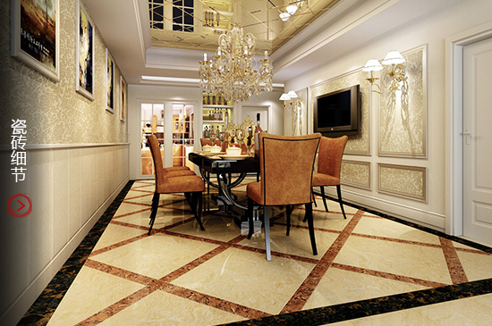
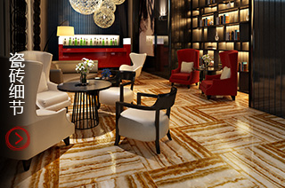

真相
真相
瓷砖的强度和抗折性其实取决于它的密度，而不在于它的厚薄。鉴别瓷砖强度的高低，可查看瓷砖背面颗粒的细腻程度。一般情况下，瓷砖颗粒越细腻，致密度越高，其破坏强度就越高，相同厚度的瓷砖更重的质量一般会更好。再加上，国际建筑陶瓷产品的发展方向是轻、薄、结实、耐用、个性化，厚砖早就不是好砖的评判标准了。
像特地陶瓷早几年就推进薄砖，但质量和性能都比一般厚砖要好。

真相
一般来说，亚光釉面砖相对亮面砖容易吸脏，但不会渗到釉面内，用常见的清洁剂就可去除。实际上，像特地柔光微晶石这种优质的亚光砖，其表面的釉层都经过特殊处理，耐磨、防滑、不吸脏、易清洁。


真相
佛山拥有极多驰名中外的优秀瓷砖品牌，特地、东鹏、鹰牌等佛山瓷砖确实很有口碑，但是不少外地厂家在佛山注册了一个瓷砖品牌，然后在外地生产。这种“佛山瓷砖”不一定就拥有佛山瓷砖的品质，所以也不一定到佛山买砖就一定靠得住，消费者还是要找值得信赖的大品牌。
真相
瓷砖作为半成品，其最终效果与铺贴施工有极大的关系。特地陶瓷特约资深铺贴师傅告诉我们，空鼓有很多情况造成，包括铺贴没有留缝，和浆不均和水泥标号过高等原因。铺贴时要注意三种情况，就能有效避免空鼓。
真相
如果瓷砖铺贴不留缝，你绝对会后悔。因为瓷砖及粘贴瓷砖的水泥砂浆都会存在热胀冷缩的问题，在不同的环境下瓷砖及水泥砂浆都会存在一定的伸缩，如果不留缝的话，会导致瓷砖在后期使用的过程中出现起鼓或者开裂。而且铺贴留缝也有利于避免瓷砖尺寸误差或者施工误差造成的美观度影响。
真相
实际上，瓷砖种类非常多，抛光砖、抛釉砖、抛晶砖，不同规格不同产品不同品牌的价格都不同，再加上瓷砖销售模式，并非终端价格高的产品就一定是好的，同理也并非价格相对实惠的产品就不好，大家要先搞清楚自己的需求，不同的空间用不同的瓷砖，找到合适的产品。